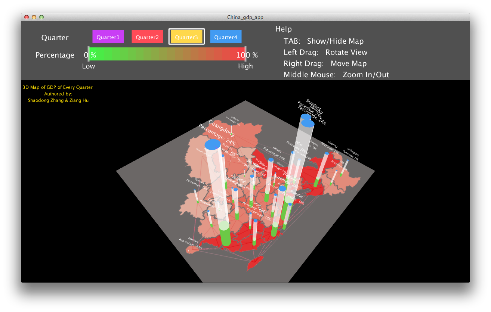

Population and GDP of China: Relationship and Development
Team: TARS (Team member: Ziang Hu & Shaodong Zhang)
See our previous work here
Hover on the map to see the data visualization, drag it to move.
2013 GDP per Capita
100
3D Application for Visualisation

DOWNLOAD：
Source codes
(in file "china_gdp_app", you need Processing to run it)
Application for Mac
Application for Win64
Application for Win32